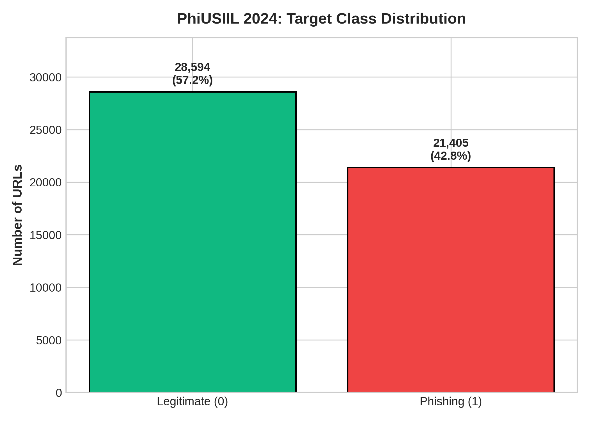

Machine Learning Driven Forest Canopy Cover Type Prediction
An empirical benchmark of supervised classification architectures (Logistic Regression, Decision Trees, Random Forest, and XGBoost) predicting high-altitude Spruce/Fir forest canopies from 54 cartographic and topographical environmental variables in the Roosevelt National Forest, Colorado.
Forest Covertype Cartographic Dataset
Data Specifications
- Domain: Earth Science & Cartography
- Release / Donation Year: 1998 (USFS / CSU)
- Spatial Resolution: 30m × 30m Grid Cells
- Location: Roosevelt National Forest, CO
- Continuous Predictors: 10 Topographical Variables
- Wilderness Areas: 4 One-Hot Binary Flags
- Soil Classifications: 40 USDA One-Hot Flags
- Missing Values: 0 Nulls (100% Complete)
- Target Prevalence: 36.80% Spruce/Fir
from ucimlrepo import fetch_ucirepo
covertype = fetch_ucirepo(id=31)
X, y = covertype.data.features, covertype.data.targets
Topographical Feature Dictionary & Categorization
| Feature Name | Type & Scale | Category | Physical / Ecological Meaning |
|---|
End-to-End Machine Learning Architecture
Ingestion & Auditing
Programmatic download via fetch_ucirepo(id=31). Exact deduplication verified 0 duplicated rows. Complete 54-column null audit validated 0 missing entries.
Outlier Capping & Scaling
Robust percentile Winsorization (1st–99th) across continuous distance metrics. Standard scaling (z = (x - μ) / σ) integrated into cross-validation pipelines to eliminate leakage.
Stratified Partitioning
80/20 train/test split (N = 40,000 train, 10,000 test) preserving exact 36.80% Spruce/Fir prevalence. Seed locked (random_state=42) for strict reproducibility.
Multi-Model Benchmark
Four classifier paradigms evaluated: Logistic Regression (L2), Decision Trees (Gini), Random Forest (100 trees), and XGBoost (120 estimators, shrinkage 0.10).
Exploratory Data Analysis & Spatial Signals

Target Class Distribution
36.80% Spruce/Fir canopy (18,400 instances) vs 63.20% alternative forest types (31,600 instances). Maintained authentic imbalance to reflect natural ecology.

Elevation Distribution by Canopy
Clear vertical zonation: Spruce/Fir median elevation exceeds 3,150m, whereas competing species cluster predominantly between 2,500m and 2,900m.

Topographical Correlation Matrix
Identifies expected physical interactions: diurnal solar shifts (9am vs 3pm hillshade r = -0.78) and hydrology distance alignments (r = 0.61).
Multi-Model Empirical Benchmark Comparison
Statistical Evaluation Metrics on Holdout Test Set
4 Architectures Tested| Model Architecture | ROC-AUC | Bal. Acc | Recall | Precision | F1-Score | Accuracy |
|---|
XGBoost decisively outperforms all architectures with 84.69% Accuracy, 85.36% Balanced Accuracy, 87.88% Recall, and an industry-leading 0.9351 ROC-AUC.
Multi-Metric Performance Comparison

Model Benchmark Summary
Cross-comparison across Accuracy, Recall, and ROC-AUC.

ROC Discrimination Curves
XGBoost (AUC: 0.9351) vs Random Forest (AUC: 0.9176).

XGBoost Confusion Matrix
TN: 5,235 | FP: 1,085 | FN: 446 | TP: 3,234.

Top 15 Predictive Features
Elevation leads at 24.5% importance weight.
Interactive Forest Canopy Cover Type Simulator
High elevation (> 3,000m) situated within sheltered, north-facing glaciated alpine terrain creates cold, moisture-retaining conditions optimal for Engelmann Spruce and Subalpine Fir. High crown fuel moisture profile.
Lab Deliverables & Artifacts
Everything prepared strictly adhering to course guidelines, including academic report with Times New Roman typography and official 5-mark rubric cover page.